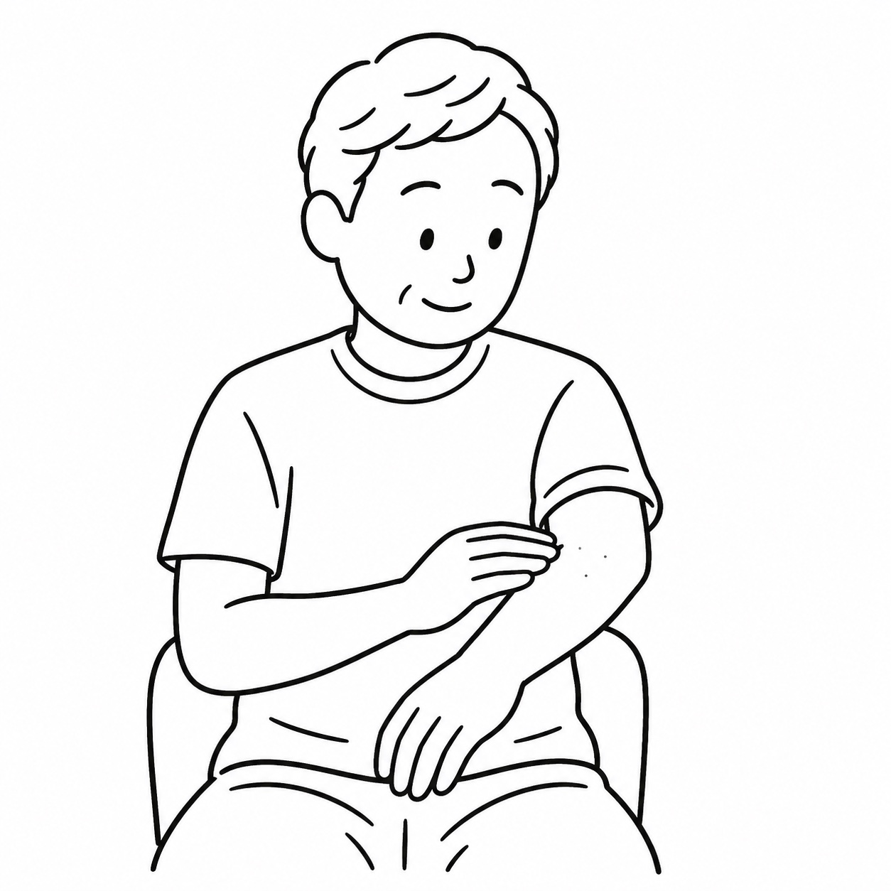

日常で、自分の体を気にかける
皮膚・ほくろの変化に気づく
着替えや入浴のとき、皮膚の様子を少し気にかけてみましょう。ほくろの大きさだけで判断せず、以前との違いや、ほかのほくろと比べた違いに目を向けます。
見方の目安

見える範囲から、普段の状態を見る
明るい場所で、腕・手・脚などを見ます。ほくろだけでなく、新しくできたものや、治りにくい傷・できものにも目を向けます。
見づらい所は、鏡や手助けを使う
背中や頭皮などは、鏡を使ったり、本人が希望する場合は家族などに手伝ってもらったりできます。足の裏、指の間、爪も確認します。無理な姿勢で見る必要はありません。
変化を相談時に伝える
いつ、どこが、どのように変わったかを伝えます。写真があると経過を説明しやすいことがありますが、記録がなくても受診できます。
気にかけたい変化
- 形が左右で違う、輪郭が不規則になった
- 色むらがある、色が以前と変わった
- 大きさや厚み、見た目が変化している
- 新しいできもの、出血や治りにくい傷
- 爪の黒い線の幅が広がるなどの変化
これらの変化があっても、特定の病気とは限りません。自分で病名を決めず、気になることを医療者に伝えましょう。
セルフチェックで分かることには限りがあります
こうした特徴は相談の手がかりで、がんの判定表ではありません。小さいものや、典型的な特徴がないものもあるため、見た目だけで良性・悪性を決めないでください。皮膚科では診察や必要な検査で確認します。
このページでは、正常・異常の採点や、病気がないという判定は行いません。
大事なこと3つ
- 普段の皮膚を知り、色・形・大きさの変化を気にかける。
- 見づらい場所も、無理のない方法で見る。
- 特徴がそろうまで待たず、気になる変化は皮膚科へ。
参考資料
一般的な健康情報です。個別の診断を行うものではありません。更新日：2026年11月26日